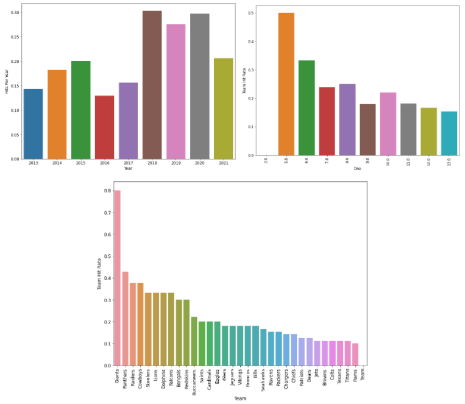
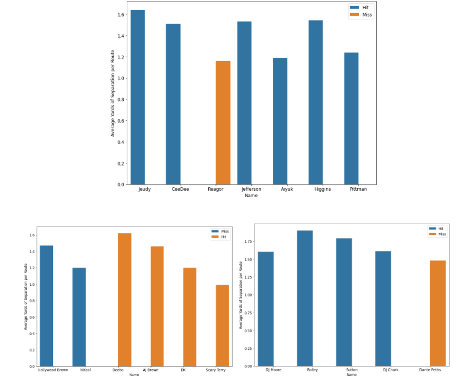
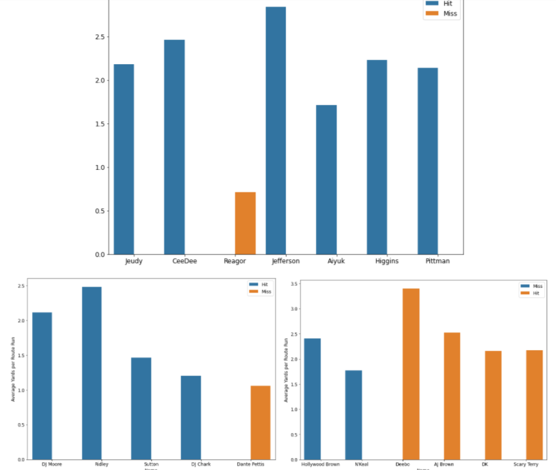

How to Not Mess Up Drafting Wide Receivers
By Anish Cherwoo | December 11, 2021

In today’s passing league, the wide receiver position might be the most flashy on the entire team. Every year seems to be “one of the best wide receiver classes” in coming through the draft. With all this talent and attention also comes quite a hefty load of expectation and criticism. Analysts constantly critique wide receiver picks made by teams and look at who the team could have picked instead of the struggling young receiver that they actually picked. No shade towards Jalen Reagor, but Justin Jefferson, one of the best wide receivers in the league, was picked right after him. As things stand right now, Jalen Reagor is probably not even a top 40 receiver in the league. Then why did the Eagles pick him over Jefferson. And Brandon Aiyuk. And Tee Higgins. And Chase Claypool. This is not just a one time thing though. If we go back to the previous NFL Draft, Marquise Hollywood Brown and N’Keal Harry were the only two wide receivers picked in the first round. I think most people would agree that, at least three years into their careers, they would rather have either Deebo Samuel, A.J. Brown, D.K. Metcalf, or Scary Terry McLaurin than either of the two first rounders. And yet those four receivers were all taken in either the second or third rounds.
Since drafting wide receivers has proven to be such a difficult task, let us look into the numbers of drafting them. Data was gathered about wide receivers from the last nine years. We will begin by noticing a couple trends in drafting wide receivers.
We can see from the bar plot below that there are anywhere from 15-30% of wide receivers that hit with an average of about 21-22% of them hitting. The hit rate for teams also seems to go down for the teams that spend more picks on receivers and this is likely a result of teams pouring more resources into the position when their picks fail as compensation. The teams that scout receivers well simply spend a few picks with most of them hitting and are good to go. Why can’t every team do that though? Well if every team could, the league would probably be completely even talent wise, and this difference in opinion by scouts is an inevitable part of the game.
Looking at the team hit rates we see that individual teams have an average hit rate of about 22% (which is very similar to the average hit rate per year), and most teams fall into the 15-40% range. The data quite closely reflects what one would imagine from watching the NFL.
Moving on now to what differentiates receivers. Data was gathered about the receivers taken in the three previous NFL Drafts. Specifically, the receivers in the 2020, 2019, and 2018 draft classes, their yards of separation and their yards per route run were put up against those of the rest of their class. The charts also provide whether the player was a hit or a miss. We see that in almost all cases the players with higher separation are a hit and the opposite goes for those who have low separation.
Next we examine the yards per route run data. We see that just like the yards of separation data, the yards per route run data provides similar insights. The data points to the fact that the higher yards per route run on average is, the more likely it is for that player to be a hit rather than a miss. This is even with some outstanding circumstances in the data, such as that Scary Terry’s quarterbacks have all left a lot to be desired, and Brandon Aiyuk had a rough beginning to the season which has greatly skewed his numbers.
There are definitely certain metrics out there, such that if you compile and analyze them enough you will select players that do not miss. Now, they may not be the best receiver in the draft, but they will be worth the capital that was invested in them. All teams would have to do is look at these metrics regarding the players' college game, in addition to the eye test of course, and they would likely see much increased draft hits at the receiver position compared to what they would get if they kept doing what they are doing currently.
.gif)